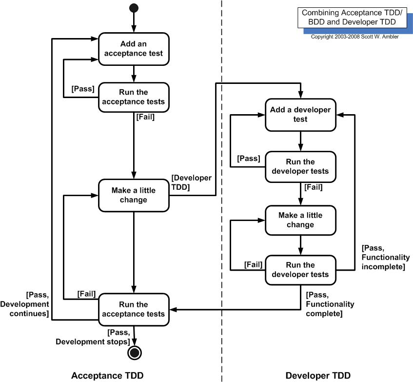
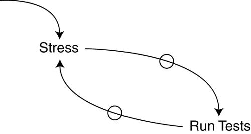

Extreme Programming
When using extreme programming, we already have lots of feedback during the entire process.

Also known as TDD
How to apply it?
By example...
Made popular by Kent Beck in Extreme Programming
Test-driven development is not about testing. Test-driven development is about development (and design), specifically improving the quality and design of code. The resulting unit tests are just an extremely useful by-product.
Another way to define Test-driven development:
When using extreme programming, we already have lots of feedback during the entire process.
This is where test-first development kicks in
Test driven development is much related to the 'test-first' concepts of XP.

A list of ways that test-first programming can affect design:
When we add the rule of removing duplicate code to TFD, we get something like the following diagram:



Test is verb meaning "to evaluate".
Test is also a noun, "a procedure leading to acceptance or rejection."
Break free from the negative feedback loop!
What loop?

Don't write any production code, create a test first. Think about the desired API.
Write just enough code to make the test fail.
Run and watch the test fail, now you know the test is running.
Write just enough code to make the test pass.
Run and watch the tests pass.
If you have any duplicate logic, or inexpressive code, refactor to remove duplication and increase expressiveness -- this includes reducing coupling and increasing cohesion.
Run the tests again, you should see them pass. If not, you messed up the refactoring, so fix it and re-run.
Repeat the steps above, until you can not find any more tests that require writing new code.
TODO:
public void testMultiplication() {
Dollar five= new Dollar(5);
five.times(2);
assertEquals(10, five.amount);
}
class DollarDollar(int amount) {}void times(int multiplier) {}int amount;So now what do we do?
Write just enough code to make the test pass.
public void testMultiplication() {
Dollar five= new Dollar(5);
five.times(2);
assertEquals(10, five.amount);
}
class Dollar {
int amount;
Dollar(int amount){}
void times(int multiplier){}
}
int amount = 10;Does this seem odd? Well, we're not done yet...
We are now ready to remove duplication. But where is the duplication?
public void testMultiplication() {
Dollar five= new Dollar(5);
five.times(2);
assertEquals(10, five.amount);
}
class Dollar {
int amount = 10;
Dollar(int amount){}
void times(int multiplier){}
}
Don't see it? What if we write it like this?
int amount = 5 * 2;The 5 and 2 are now in two places, and we must ruthlessly eliminate duplication before moving on. The rules say so.
There isn't a single step that will eliminate the 5 and the 2. But what if we move the setting of the amount from object initialization to the times() method?
int amount;
void times(int multiplier) {
amount= 5 * 2;
}
The test still passes, the bar stays green. Happiness is still ours!
Do these steps seem too small to you?
Remember, TDD is not about taking teeny-tiny steps, it's about being able to take teeny-tiny steps.
So, let's continue!
int amount;
void times(int multiplier) {
amount = 5 * 2;
}
Where can we get a 5?
That was the value passed to the constructor, so if we save it in the amount variable
Dollar(int amount) {
this.amount = amount;
}
Now we can use it in times()
void times(int multiplier) {
amount = amount * 2;
}
The value of the parameter "multiplier" is 2, so we can substitute the parameter for the constant
void times(int multiplier) {
amount = amount * multiplier;
}
We can reduce duplication even more!
void times(int multiplier) {
amount *= multiplier;
}
TODO:
/
#